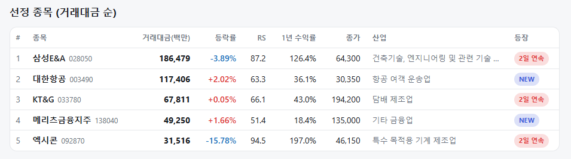
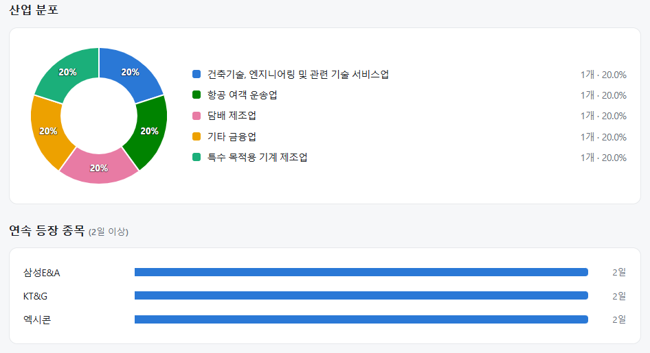
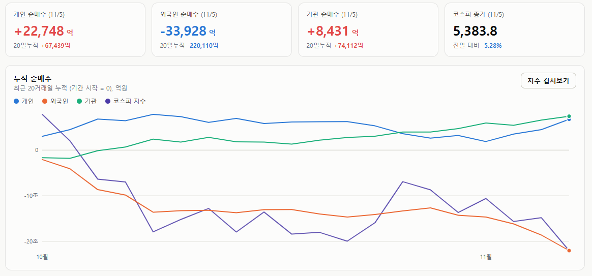

매일의 주도주 정리를 위해 기록합니다.
연속적으로 나온 종목들 또는 상승 후 조정받는 종목 위주로 리서치 해보시면 좋을 것 같습니다.


*오늘의 퀀트픽은 없습니다.
#주도섹터
커뮤니케이션, 제약·바이오 및 자동차
주요 업종 및 종목: 양방향미디어와서비스(+8.17%), 미디어와엔터테인먼트(+6.60%), 비철금속(+5.62%), 방송과엔터테인먼트(+5.15%), 제약과생물공학(+3.38%), 자동차와부품(+2.69%), 은행(+3.05%), 셀트리온(+6.50%), 기아(+4.18%), KB금융(+3.30%), 현대차(+3.17%), 하나금융지주(+2.90%), 신한지주(+2.32%), 삼성바이오로직스(+1.07%).
분석: 커뮤니케이션 대분류가 +5.91%, 세부 업종인 양방향미디어와서비스가 +8.17% 상승하며 시장 대비 뚜렷한 강세를 보였습니다. 셀트리온(+6.50%), 삼성바이오로직스(+1.07%) 등 제약·바이오 대형주와 기아(+4.18%), 현대차(+3.17%) 등 자동차주가 지수 하락을 방어했습니다. 또한, KB금융(+3.30%) 등 은행주(+3.05%)로 방어적 자금이 유입되었습니다.
#조정섹터
반도체 밸류체인 및 IT하드웨어
주요 업종 및 종목: 전자장비와기기(-13.00%), 전기장비(-11.22%), 통신장비(-9.45%), 우주항공과국방(-8.52%), 반도체와반도체장비(-7.85%), 기술하드웨어와장비(-12.51%), 자본재(-6.57%), 삼성전기(-13.72%), SK스퀘어(-9.34%), SK하이닉스(-8.60%), 한화에어로스페이스(-7.62%), 삼성전자(-6.65%), 삼성SDI(-5.87%).
분석: IT 대분류가 -8.05% 큰 폭으로 조정을 받았으며, 전자장비와기기(-13.00%), 전기장비(-11.22%) 업종의 하락폭이 컸습니다. 삼성전기(-13.72%), SK하이닉스(-8.60%), 삼성전자(-6.65%) 등 시가총액 상위 IT 및 반도체 대형주에 외국인 매도 물량이 집중되며 지수 하락을 주도했습니다. 우주항공과국방(-8.52%) 및 자본재(-6.57%) 업종도 동반 약세를 보였습니다.
#수급동향

코스피 지수는 -5.28% 하락한 5,383.80으로 마감하며 5,400선을 하회했습니다. 코스닥 지수 역시 -5.11% 하락한 678.41을 기록하며 동반 약세를 보였습니다.
유가증권시장에서 외국인 투자자는 무려 3조 3,928억 원(20일 누적 -22조 110억 원)을 순매도하며 대형주 중심의 비중 축소를 이어갔습니다. 개인 투자자는 2조 2,748억 원(20일 누적 +6조 7,439억 원), 기관 투자자는 8,431억 원(20일 누적 +7조 4,112억 원)을 각각 순매수하며 시장에 유입된 매물을 적극적으로 소화했습니다.
시장 전반의 하방 압력 확대 및 선별적 지지력: 상승 종목은 350개인 반면 하락 종목이 537개에 달해 전반적인 약세 흐름이 나타났습니다. 특히 반도체, IT하드웨어, 기계 등 핵심 산업재를 중심으로 외국인 매도세가 집중되었으나, 일부 제약·바이오 및 금융 섹터에서는 선별적인 지지력이 관찰되었습니다.
규제는 속도를 바꿀 뿐, AI 패권 경쟁을 멈추지 못한다
미국 시장은 마이크로소프트 +6.7%로 사상 최고(시총 4.1조 달러), 애플 +7%(5.1조), 아마존 +6.1%. 반대편은 마이크론 -7.0%, 샌디스크 -7.9%, 엔비디아 -3.2%, 코어위브 -9.9%. 오늘 삼성전자 -6.65%, SK하이닉스 -8.60%. S&P500이 1.8% 오른 날 반도체만 빠졌고, 그 하락이 한국으로 그대로 넘어왔습니다.
① 시장이 읽은 논리
이유는 데이터센터 규제입니다. 2028년 미국 데이터센터 용량의 약 30%를 차지할 텍사스에서 건설 모라토리엄과 보조금 폐지를 공약한 민주당 주지사(히노호사)가 당선됐고, 오하이오(액턴)는 개발사가 전기·물 비용 100%를 부담하지 않으면 조건부 중단, 조지아(바텀스)는 영향 평가 전까지 신규 건설 중단을 공약했습니다. 댄 아이브스는 계획된 800~1,000개 데이터센터 중 약 10%는 당장 지어지지 않을 것으로 봤고, 하이퍼스케일러 캐펙스 둔화를 "새로운 현실"이라고 했습니다.
시장은 이것을 한 줄로 번역했습니다. 캐펙스가 억제된다 → 구매자의 잉여현금흐름이 개선된다 → 공급자(메모리·전력기기)는 주문이 둔화된다. 지난주 FCF 마이너스로 벌을 받던 구매자가 보상을 받고, 2028년까지 완판을 말하던 공급자가 벌을 받은 이유입니다.
② 텍사스는 이미 막고 있었다 — 규제의 범위는 생각보다 좁다
텍사스 규제는 새 변수가 아닙니다.공화당 애벗 주지사가 이미 6월에 데이터센터의 전력 인프라 비용 부담을 지시했고, 8월에는 전력·물 사용 감사 완료 전까지 신규 전력망 연결 승인을 중단했습니다. 민주당 주지사는 그것을 더 세게 하겠다는 것이지 없던 규제를 만드는 것이 아닙니다. 전국 단위 건설 금지는 의회를 통과해도 대통령 거부권에 막히고, 민주당 의석은 거부권을 뒤집는 데 필요한 3분의 2에 못 미쳐 사실상 어렵습니다. 주지사가 할 수 있는 것도 인허가 지연, 세제 혜택 폐지, 비용 부담 확대 정도라, 현실적인 결과는 "금지"보다 "더 비싸고 느리게"입니다.
③ 한국은 무엇을 더 반영해야 하나
어제(11/4) 종가 기준 코스피 선행 PER은 3.98배, PBR 1.07배, 반도체는 PER 2.71배, PBR 1.28배입니다. 10월 16일 글에서 "워스트 시나리오의 1차 저점은 선행 PBR 1.0배인 5,100"이라고 썼는데, 그 선에 거의 근접했습니다. "규제 강화 → AI 투자 위축 → 수요 균열 → 실적 가시성 훼손"이라는 시나리오를 여기서 더 반영할 유인은 크지 않습니다. 그 시나리오가 맞으려면 예치금 걸린 계약이 깨지고 2028년 공급 제약이 풀려야 하는데, 어제 나온 것은 주지사 당선과 공약뿐입니다.
데이터센터 규제 논의로 AI와 반도체 관련주가 하루 사이 큰 우려를 겪었습니다.
데이터센터 투자는 지금 미국 성장의 핵심 동력이고, 중국과의 AI 패권 경쟁에서 밀리지 않기 위한 국가 전략 자산입니다. 어느 당이 의회를 잡든 미국이 그 경쟁에서 스스로 손을 놓는 선택을 하기는 어렵습니다. 규제는 지역별로 짓는 속도와 비용을 바꿀 수 있지만, 장기적으로 데이터센터 건설 자체를 멈추지는 않을 것으로 봅니다.
오늘의 하락은 규제의 가격이라기보다 공포의 가격이고, 확인할 숫자는 주지사 공약이 아니라 하이퍼스케일러의 캐펙스 총액과 메모리 계약 가격입니다.
오늘 하루도 수고하셨습니다.